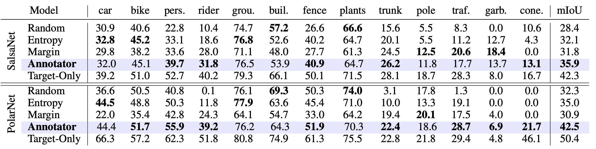

Active learning, a label-efficient paradigm, empowers models to interactively query an oracle for labeling new data. In the realm of LiDAR semantic segmentation, the challenges stem from the sheer volume of point clouds, rendering annotation labor-intensive and cost-prohibitive. This paper presents Annotator, a general and efficient active learning baseline, in which a voxel-centric online selection strategy is tailored to efficiently probe and annotate the salient and exemplar voxel girds within each LiDAR scan, even under distribution shift. Concretely, we first execute an in-depth analysis of several common selection strategies such as Random, Entropy, Margin, and then develop voxel confusion degree (VCD) to exploit the local topology relations and structures of point clouds. Annotator excels in diverse settings, with a particular focus on active learning (AL), active source-free domain adaptation (ASFDA), and active domain adaptation (ADA). It consistently delivers exceptional performance across LiDAR semantic segmentation benchmarks, spanning both simulation-to-real and real-to-real scenarios. Surprisingly, Annotator exhibits remarkable efficiency, requiring significantly fewer annotations, e.g., just labeling five voxels per scan in the SynLiDAR to SemanticKITTI task. This results in impressive performance, achieving 87.8% fully-supervised performance under AL, 88.5% under ASFDA, and 94.4% under ADA. We envision that Annotator will offer a simple, general, and efficient solution for label-efficient 3D applications.
We evaluate Annotator on several LiDAR semantic segmentation benchmarks, including simulation-to-real and real-to-real scenarios.
Performance vs. annotated proportion on SemanticKITTI val of existing label-efficient LiDAR segmentation paradigms including domain adaptation, weakly- and semi-supervised learning. Annotator attains excellent balance between performance and annotation cost.
Table 1: Quantitative summary of all baselines' performance based on MinkNet over various LiDAR semantic segmentation benchmarks using only 5 voxel grids. Source-/Target-Only correspond to the model trained on the annotated source/target dataset which are considered as lower/upper bound. Note that results are reported following the order of AL/ASFDA/ADA in each cell.
Table 2: Quantitative summary of all baselines' performance based on SPVCNN over various LiDAR semantic segmentation benchmarks using only 5 voxel grids.
Table 3: Per-class results on task of SynLiDAR-to-KITTI (MinkNet) using only 5 voxel budgets.
Table 4: Per-class results on task of SynLiDAR-to-POSS (MinkNet) using only 5 voxel budgets.
Category frequencies on SemanticPOSS train of Annotator selected 5 voxel grids under AL, ASFDA, ADA scenarios, with the model trained on SynLiDAR-to-POSS (MinkNet).
Visualization of segmentation results for the task SynLiDAR-to-KITTI using MinkNet. Each row shows results of Ground-Truth, Target-Only, Source-Only, our Annotator under AL, ASFDA, and ADA scenarios one by one.
Table 5: Per-class results on the SemanticPOSS val (range-view: SalsaNet and bev-view: PolarNet) under active learning setting using only 10 voxel budgets.
@inproceedings{xie2023annotator,
author = {Xie, Binhui and Li, Shuang and Guo, Qingju and Liu, Harold Chi and Cheng, Xinjing},
booktitle = {Advances in Neural Information Processing Systems},
title = {Annotator: An Generic Active Learning Baseline for LiDAR Semantic Segmentation},
year = {2023}
}
}